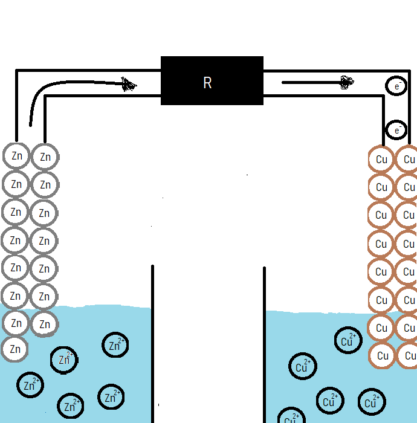

What is an battery?
An battery is device that stores chemical energy and is able to convert it to electric energy. The main parts of an battery are : Kathode, Anode and Elektrolytem.
To further more understand how an battery works let's take a look at galivan cell. Galvian cell is device that can truth an chemical reaction produce electric current. Batteries are made from one or more galvians cells. Bellow we can se a photo of one cell.
So galvian cell, more specifically this is specific type of galvian cell called daniells cell is made of two different solutions(Zinksulfat solution(aq) and Coppersulfat solution(aq)), two different metals and wire connecting them.
Zinksulfat reaction in water
ZnSO4 → Zn2+ + SO42-
Coppersulfat reaction in water
CuSO4 → Cu2+ + SO42-
In both solutions there form ions. On the left Zn2+ and SO42- ions and on the right Cu2+ and SO42- ions. This types of solutions where most of dissolved solute exist as ions are are called Electrolytes, mentioned before as one of the main parts of the battery.
On the left side we can see piece of Zink(Zn) metall is Zinksulfat solution and on the right we can see copper(Cu) in Coppersulfit solution.When those 2 metalls inside those solutions are connected with the electric wire the chemical reactions occurs. More specifically reaction is splited in two half reactions. Those reactions are oxidationa and reduction or simply called redox reaction.
An oxidation-reduction(redox) reaction is a type of chemical reaction that involves a transfer of electrons between two species. Cu2+ ions in Coppersulfat solution have stronger pull for electrons then Zn2+ ions in Zinksulfat solution. Knowing that lets take a look at what is happening inside an battery.
Part 1

Image of galvian cell with atom/ion representation. (without SO42- ions because they are not important for this).
Part 2

As we sead before Cu2+ ions pull stronger electrons and that's why Zink reacts to Zn2+(aq) + 2e-. This process of Zink "spliting up" is called oxidation.
Oxidation of Zink
Zn(s) → Zn2+(aq) + 2e-
Part 3
Those 2 electrons then flow from Zink metall to Coppersulfat solution truth electric wire and so produce electric current.
Part 4

Electrons flow to Cu2+ ions.
Part 5

One of Cu2+ ions reacts with those 2 electrons. This part is called reuduction of Cu2+(aq) ions .
Reduction of Cu2+ Ion
Cu2+(aq) + 2e- → Cu(s)
Part 6
This is forming a new copper atom. :) And this is how electrons flow from one side to another.
For the end, now when we understand how does this process work let's just conclude what anode and kathode are. Anode(negative electrode) is a place where oxidation occurs(in this case by Zink metall) and kathode is the place where reduction occurs (in this case Copper metal).
Es ist Quiz Zeit!
Lithium und Kobalt Lagerstätten
So grün Lithium-Ionen-Batterien auch erscheinen mögen, sie haben schlimme Folgen für Mensch und Planet.
Die Gewinnung der Rohstoffe, hauptsächlich Lithium und Kobalt, erfordert große Mengen an Energie und Wasser. Darüber hinaus findet die Arbeit in Bergwerken statt, in denen Arbeiter – darunter auch Kinder im Alter von sieben Jahren – oft unsicheren Bedingungen ausgesetzt sind.
Rund ein Drittel des weltweiten Lithiums stammt aus Salinen in Argentinien und Chile, wo das Material mit riesigen Wassermengen in einem ansonsten trockenen Gebiet abgebaut wird. In Tibet zum Beispiel vergiftete ein giftiges Chemikalienleck aus einer der Minen im Jahr 2016 den örtlichen Fluss Lichu.

Kobalt ist ein wichtiger Bestandteil der Elektrode einer Batterie, aber rund 70 % dieses Elements finden sich in nur einem Land: der Demokratischen Republik Kongo in Afrika.Männer, Frauen und Kinder arbeiten ohne die einfachste Schutzausrüstung wie Handschuhe und Gesichtsmasken.Dort atmen sie kobalthaltigen Staub ein, der beim Arbeiten in einsturzgefährdeten Tunneln tödliche Lungenerkrankungen verursachen kann.

Viele Länder sind sich bewusst, dass der Bergbau verantwortungsbewusster und nachhaltiger betrieben werden muss. Die Europäische Union beispielsweise verlangt von Unternehmen, Batterien am Ende ihrer Lebensdauer zu sammeln und entweder einer Wiederverwendung zuzuführen oder sie zum Recycling zu zerlegen.
Es ist Quiz Zeit!
Rezyklierung
Batterien sind wertvoll und recycelbar, aber aufgrund technischer, wirtschaftlicher und anderer Faktoren. Weniger als 5 % werden heute recycelt.
Diese Liste enthält AAA-, AA-, C-, D-, Knopfzellen-, 9-Volt- und alle anderen Batterien, sowohl wiederaufladbare als auch Einwegbatterien. Alle Batterien müssen recycelt oder zu einer Sonderabfallentsorgungseinrichtung, einem universellen Entsorgungsunternehmen oder einer autorisierten Recyclinganlage gebracht werden.
Wiederaufladbare Lithium-, Lithium-Ionen- und Zink-Luft-Batterien sollten recycelt werden. Neben „herkömmlichen“ Akkus wie AA oder AAA sollten auch Akkus aus Haushaltsgegenständen wie Kameras, Handys, Laptops und Elektrowerkzeugen recycelt werden. Aber wie bereits erwähnt, werden nur 5 % der Batterien recycelt.
Aber wie hoch sind die Kosten für diese 5 %, die recycelt werden, und ist es überhaupt profitabel?
Die Kosten für den Abbau der Batterie ähneln denen von Bleisäure, hauptsächlich weil für den Prozess ähnliche Geräte verwendet werden und die Betriebskosten vergleichbar sind – etwa 100 bis 200 US-Dollar pro Tonne der schwarzen Masse. In Zukunft könnte direktes Recycling rentabel sein, wenn Die Technologie kann zu einer Verarbeitung im großen Maßstab entwickelt werden, die durch das Erreichen des Endes der Lebensdauer von EV-Batterien in großen Mengen ermöglicht wird. Direktes Recycling soll sauberer sein als ältere Verfahren, bei denen das Material geschmolzen wird. Derzeit erzielen die meisten Recyclingunternehmen jedoch keine bis sehr geringen Gewinne.
Wie werden Batterien recycelt?
Die Batterie wird zunächst in ihre Bestandteile getrennt: Kunststoff, Säure, Schwermetall. Batterien werden oft mit Hochgeschwindigkeitshämmern oder Schreddern zerkleinert. Die Batteriesäuren oder andere flüssige Elektrolyte werden abgelassen und zu Wasser neutralisiert oder zu Verbindungen wie z Karbonate.
Die zerbrochenen Batterieteile gelangen in einen Bottich, in dem das Blei und die schweren Materialien nach unten fallen, während der Kunststoff nach oben steigt. An dieser Stelle werden die Polypropylenstücke weggeschöpft und die Flüssigkeiten abgezogen, wobei Blei und Schwermetalle zurückbleiben. Jedes der Materialien beginnt dann seine eigene Recyclingreise.
Aber was passiert mit den leeren Batterien, sind auch leere Batterien recycelbar? Normale Batterien: Normale Alkali-, Mangan- und Kohle-Zink-Batterien gelten nicht als Sondermüll und können mit dem normalen Hausmüll entsorgt werden. Andere gebräuchliche Einweg- oder wiederaufladbare Batterien wie Lithium- und Knopfbatterien sind recycelbar, aber der Zugang zum Recycling ist möglicherweise nicht an allen Standorten verfügbar. Um diese Frage zu beantworten, können einige recycelt werden und andere nicht.
Wer macht sie und wo werden sie hergestellt? Laut Benchmark Mineral Intelligence, einem bekannten Datenanbieter, dominiert China heute die Batterieproduktion mit 93 „Gigafactories“, die Lithium-Ionen-Batteriezellen herstellen, gegenüber nur vier in den Vereinigten Staaten.
Beim Recycling von Lithium-Ionen-Batterien ist der Prozess selten einfach. Die verbrauchten Lithium-Ionen-Batterien werden zerlegt, um Kunststoff, Stahlgehäuse und Elektronikschrott von der Zelle zu trennen. Anschließend werden die Zellen fünf Stunden lang bei einer Temperatur von 500 °C behandelt. Der Elektrolyt in der Zelle wird abgebaut und flüchtig.
Es ist Quiz Zeit!
Ladenstationen
Eine leere Batterie ist das häufigste und offensichtlichste Problem bei Elektrofahrzeugen. In Hamburg gibt es 7000 zugelassene Elektrofahrzeuge und insgesamt 1300 Ladepunkte. Mit der Zeit wird der Bedarf an Ladepunkten steigen, da die Produktion von Elektrofahrzeugen steigt.
Eine zuverlässige Ladestation bekommen Sie als Basismodell ab etwa 600 Euro. Je nach Ausstattung und Zusatzfunktionen kann sich der Preis natürlich erhöhen. Ein nicht ganz unbedeutender Kostenfaktor ist die fachgerechte Installation der Ladestation durch einen qualifizierten Elektroinstallateur.
Ein großes Problem mit dem sogenannten “Fast chargers” ist die Überhitzung. Der Autoboden wird sehr warm, da die Batterien mit viel Kraft und hohen Geschwindigkeiten geladen werden. Firmen wie Tesla und Ford versuchen Lösungen für dieses Problem zu finden da sie am stärksten davon betroffen sind.
Eine gut gepflegte Batterie kann nach aktuellen Schätzungen 10-20 Jahre halten, aber wenn immer ein “Fast charger” zum Laden und Aufladen der Batterie verwendet wird, schätzt die aktuelle Batterie eine Batterielebensdauer von 6 bis 8 Jahren.